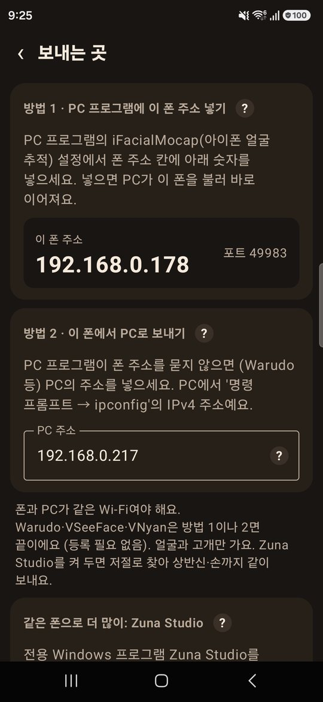

함께 쓰는 프로그램
- Warudo
- VSeeFace
- VNyan
iFacialMocap을 지원하는 프로그램이면 다 돼요. VMC 프로그램도 지원해요(고급).
3단계면 끝
폰과 PC를 같은 Wi-Fi에 연결하세요.
폰 세우기
얼굴에서 30–50cm, 눈높이에 두고 조명은 앞에서.

PC에서 iFacialMocap 고르기
PC 프로그램에서 iFacialMocap 트래커를 고르고, 앱에 보이는 폰 주소를 입력해요.

시작하고 보정
추적 시작을 누르고 보정을 한 번 해요(45초).

방송을 위해 만들었어요
영상은 폰 안에만
추적 숫자만 내 Wi-Fi로 PC에 가요. 녹화·업로드는 없어요.
계정·광고 없음
가입도, 광고도, 분석 도구도 없어요.
내 얼굴에 맞춘 보정
보정은 한 번이면 돼요. 폰을 옮겼다면 4초 빠른 보정.
전면·후면·후면 넓게
더 선명한 후면 카메라도 돼요. 순서는 음성으로 안내해요.
화면 꺼져도 추적
뒤에서도 계속 돌아가고, 튀는 움직임은 걸러요.
4개 언어 지원
처음 사용 안내와 ? 설명을 English, 한국어, 日本語, 简体中文으로.
기기 요구 사항
| 최소 | 권장 | |
|---|---|---|
| Android | Android 10 이상 | Android 13 이상 |
| 프로세서 | 64비트 (ARM64) | 2021년 이후 중급 이상 칩 |
| 메모리 | 4GB | 6GB 이상 |
| 네트워크 | 폰과 PC가 같은 Wi-Fi | 5GHz Wi-Fi, PC는 유선 또는 5GHz |
갤럭시 S24 Ultra(Android 16)에서 약 40fps 확인. 오래된 폰은 더 느려요.
Zuna Studio로 더 많이
저희가 만든 Windows 프로그램이에요. 같은 폰으로 팔·손가락까지 추적하고, 폰 덱으로 방송을 다뤄요. Warudo·VSeeFace·VNyan에는 필요 없어요.
| 기능 | Warudo / VSeeFace / VNyan | Zuna Studio |
|---|---|---|
| 얼굴과 고개 | 됨 | 됨 |
| 어깨와 팔 | 다른 트래커 필요 | 됨 |
| 손가락 | 다른 트래커 필요 | 됨 |
| PC에서 시작하는 보정 | 안 됨 | 됨 |
| 폰·태블릿 방송 덱 | 안 됨 | 됨 |
| 내 폰만 아바타를 움직이게 | 안 됨 | 됨 |
Studio가 더해 주는 것 모두 보기
추적
- 같은 카메라로 상반신·팔·손가락
- 아바타 체형에 맞춘 팔
- 단축키나 덱 버튼으로 빠른 보정
아바타
- 입 모양 아·이·우·에·오와 마이크 립싱크
- 표정 단축키와 자동 표정
- 흔들리는 머리카락, 소품, 던지는 아이템
방송
- OBS로 바로 가는 투명 배경 (Spout2)
- 덱: OBS 장면, 녹화, 다시보기, 음소거
- 상황별 배경음악과 한 번에 여러 동작
안심
- 폰 등록으로 다른 기기 차단
- 새 덱 기기는 PC에서 4자리 숫자로 허용
- 영상은 폰 밖으로 안 나가요


무료 상담
내 아바타 전용 Studio
Studio는 공개하지 않아요. 표정·팔·손가락·카메라·덱까지 내 아바타에 맞춰 만들어 드려요. 상담은 무료예요.
Zuna Studio 문의하기maxjang123@gmail.com
보내 주실 것
- 아바타 파일VRChat 프로젝트·.unitypackage, Humanoid FBX, 또는 VRM
- 셰이프키ARKit·Perfect Sync, VRChat 입 모양, VRM, MMD, 또는 없음
- 셰이더이름과 버전 (예: lilToon 2.x)
- 라이선스이용 규약이나 판매 페이지. 방송·수정이 허용돼야 해요
- 그 밖에 (선택)표정 애니메이션, 옷, 소품, 흔들림
- 사용 환경폰, Windows 10/11 64비트(DirectX 12), OBS + Spout2
- 방송 구성 (선택)OBS 장면, 배경, 음악, 카메라 구도
파일은 첨부 말고 다운로드 링크로. 비밀번호는 보내지 마세요.
자주 묻는 질문
아이폰이나 iFacialMocap 앱이 필요한가요?
아니요. PC 프로그램은 Zuna Facecap을 iFacialMocap으로 인식해요.
카메라 영상이 어디로 가나요?
아니요. 영상은 폰에 남고, 추적 숫자만 PC로 가요.
인터넷이 필요한가요?
아니요. 내 Wi-Fi 안에서 돌아가요. 인터넷은 업데이트 확인에만 써요.
Warudo · VSeeFace · VNyan에서 몸과 손도 움직이나요?
얼굴과 고개만 움직여요. 팔·손가락은 Zuna Studio로.
후면 카메라를 쓸 수 있나요?
네. 설정 → 카메라 → 후면 또는 후면 넓게. 음성 안내를 켜 두세요.
Zuna Studio가 꼭 있어야 하나요?
Warudo·VSeeFace·VNyan에는 필요 없어요. 더 많은 기능은 요청하면 받을 수 있어요.
PC 프로그램이 폰을 못 찾아요
같은 Wi-Fi인지(손님용 X), Windows 방화벽에서 '개인 네트워크'를 허용했는지, VPN이 꺼졌는지, 폰 주소가 최신인지 확인하세요.
오래된 폰도 되나요?
Android 10 이상, 64비트 칩이면 돼요. 느리다면 상반신·손·60fps 추적을 끄세요.
APK는 안전한가요? 업데이트는요?
저희가 서명한 테스트판이에요. 'Zuna Facecap Dev'로 설치되고, GitHub 업데이트를 앱에서 알려 줘요. 일반 앱처럼 지울 수 있어요.